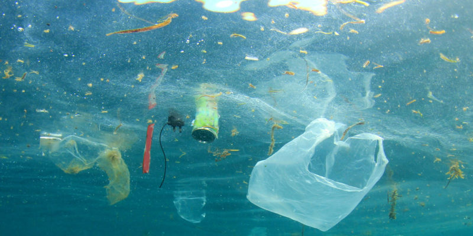

Consecuencias de la contaminacion
Entre las principales consecuencias de la contaminacion estan:
- Daños a la salud de los seres vivos. Debido a que estan expuestos a mayor cantidad de enfermedades y situaciones de estres.
- Aumento del calentamiento global. Debido a los gases contaminantes expulsados hacia la atmosfera que producen el debilitamiento de la capa de ozono.
- Perdida o desequilibrio en los ecosistemas. Debido a la extincion o migracion de especies que ven deteriorado el ecosistema en el que habitan.
- Perdida o disminucion de recursos naturales. Debido al desgaste de recursos naturales que son indispensables para la vida en la Tierra.
- Envenenamiento de las aguas. Debido a que la contaminacion de las aguas supone un gran riesgo para todos los seres vivos que no pueden prescindir de ella.
- Erosion del suelo. Debido a las industrias y la mineria y a su uso excesivo de pesticidas, fertilizantes. Degradacion de los paisajes naturales. Debido a la contaminacion sonora y visual.
